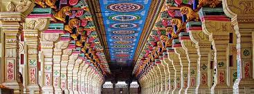

Ramanathaswamy Temple (Rāmanātasvāmi Kōyil) is a Hindu temple dedicated to the god Shiva located on Rameswaram island in the state of Tamil Nadu, India. It is also one of the twelve Jyotirlinga temples. It is one of the 275 Paadal Petra Sthalams, where three of the most revered Nayanars (Saivite saints), Appar, Sundarar and Tirugnana Sambandar, have glorified the temple with their songs. The temple was expanded during the 12th century by the Pandya Dynasty, and its principal shrine’s sanctum was renovated by Jeyaveera Cinkaiariyan and his successor Gunaveera Cinkaiariyan, monarchs of the Jaffna kingdom. The temple has the longest corridor among all Hindu temples in India. It was built by King Muthuramalinga Sethupathiy. [1] [2] The temple, located in Rameswaram, is considered a holy pilgrimage site for Shaivites, Vaishnavites and Smarthas. Mythological accounts depict the presiding deity, the Lingam of Ramanathaswamy (Shiva), as having been established and worshiped by Rama, before he crossed his bridge to the present-day island of Sri Lanka.

The temple in its current form is believed to have been built during the 17th century, while Fergusson believes the small vimana in the west corridor belongs to the 11th or 12th century.[3] The temple is said to have been sanctioned for construction by King Kizhavan Sethupathi or Raghunatha Kilavan. The contribution of the Jaffna kings of Pandya Dynasty to the temple was considerable.[4] King Jeyaveera Cinkaiariyan (1380–1410 CE) shipped stone blocks from Koneswaram temple, Trincomalee to renovate the temple's sanctum sanctorum. Jeyaveera Cinkaiariyan's successor Gunaveera Cinkaiariyan (Pararacacekaran V), a trustee at Rameswaram who also oversaw structural development of this temple and the promotion of Saivite beliefs donated part of his revenue to Koneswaram. Especially to be remembered are the immense sums that were spent during the tenure of Pradani Muthirulappa Pillai towards the restoration of the Pagodas which were falling into ruins and the splendid Chockattan Mantapam or the cloistered precincts of the temple at Rameswaram that he finally completed. The rulers of Sri Lanka also contributed to the temple; Parakrama Bahu (1153–1186 CE) was involved in the construction of the sanctum sanctorum of the temple.[4] Also, Sri Lankan king Nissanka Malla, contributed to the temple's development by making donations and sending workers.